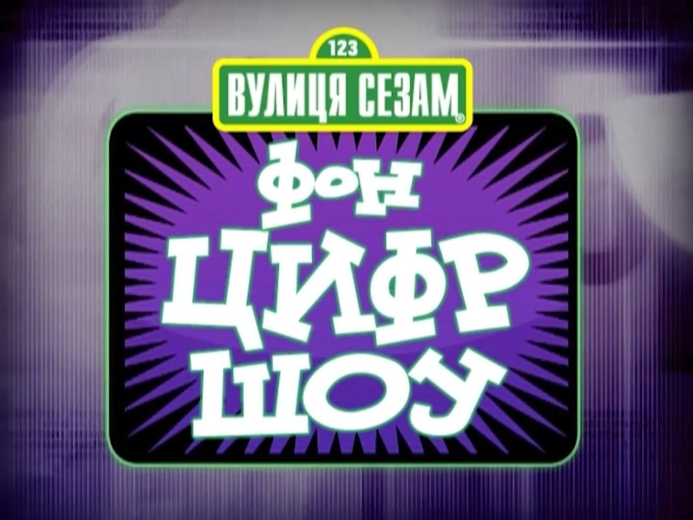

Фон Цифр Шоу
(Ukrainian)
(19/26)

Title: Фон Цифр Шоу
Aired on:
Sonce TV (formerly)
Note: The episodes below
are only partially avaliable,
using a shortened intro
and only containing the
number of the day
segments.
WATCH
19 Episodes
YouTube